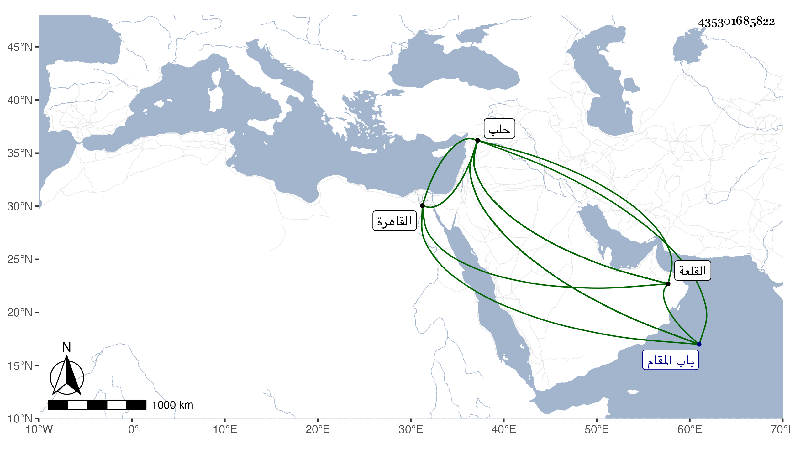

0902Sakhawi.DawLamic.ITO20230111-ara1.EIS1600.435301685822
Biography ID: 435301685822
442
عثمان بن أحمد بن سليمان بن أغلبك فخر الدين أحد أعيان أمراء حلب المتفقهة . نشأ بها وولي حجو بيتها الثانية ثم ترقى لنيابة قلعة المسلمين المعروفة بقلعة الروم مرة بعد أخرى ولى بينهما داودارية السلطان بحلب وقبلها بعد وفاة النور المعري كتابة سرها ونظر جيشها وقدم القاهرة فاستعفى عنهما وأثكل وهو بها ولدا نجيبا اسمه أحمد في طاعون سنة إحدى وثمانين ابن عشرين سنة وترك له طفلا ولد في غيبته في حلب هو الآن حي واستقر في الدواردية المشار إليها ثم عاد إلى نيابة القلعة المذكورة . ومات بها في سنة خمس وثمانين وقد جاز الخمسين ونقل منها إلى تربته التي أنشأها خارج باب المقام من حلب فدفن بها وأسند وصيته للأتابك وكان يذكر بنظم ونثر وكتابة فائقة ومذاكرة بوقائع وتاريخ ونحو ذلك مع أوصاف ذميمة سيئة عفا الله عنه .
